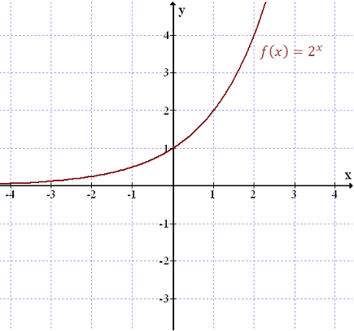
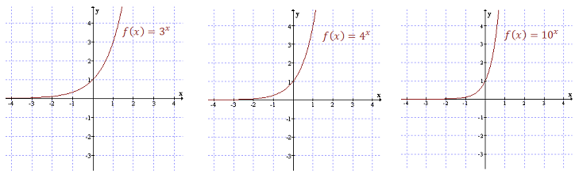
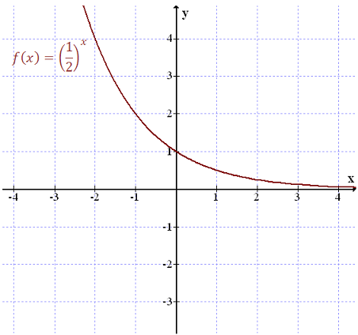
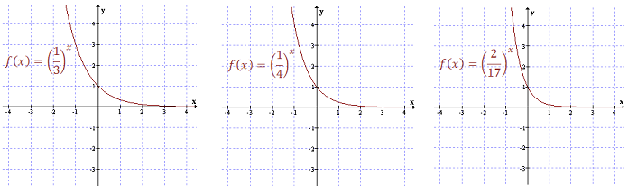

Funkcja wykładnicza ma wzór: \[f(x)=a^x\] gdzie \(a \gt 0\).
Nazwa funkcji wykładniczej pochodzi od tego, że \(x\) znajduje się w wykładniku.
Wykresem funkcji \(y = a^x\) jest krzywa, która zawsze przecina oś \(y\) w punkcie
\(1\).
Zasadniczy kształt wykresu zależy do tego czy \(a\gt 1\) czy \(a\lt 1\). Pokażemy
oddzielnie oba te przypadki.
Narysujemy wykres funkcji \(y = 2^x\).
Na początek obliczmy wartości tej
funkcji dla kilku przykładowych argumentów \(x\). Sporządźmy zatem odpowiednią tabelkę:
| \(x\) |
\(-1\) |
\(0\) |
\(1\) |
\(2\) |
\(3\) |
| \(y=2^x\) |
\(\frac{1}{2}\) |
\(1\) |
\(2\) |
\(4\) |
\(8\) |
Zatem wykres tej funkcji będzie wyglądał następująco: 
Bardzo podobnie wyglądają wykresy innych funkcji wykładniczych o podstawie
\(a\gt 1\). Przykładowo: 
Własności funkcji wykładniczej o podstawie \(a\gt 1\):
- Dziedzina: \(\mathbb{R} \).
- Zbiór wartości: \(\mathbb{R} ^{+}\).
- Monotoniczność: funkcja jest rosnąca.
- Różnowartościowość: funkcja jest różnowartościowa.
- Funkcja przyjmuje tylko wartości dodatnie: \[f(x)\gt 0,\ \text{dla}\ x\in
\mathbb{R} \]
- Miejsca zerowe: funkcja nie ma miejsc zerowych.
- Parzystość: nie jest.
- Nieparzystość: nie jest.
Teraz zobaczymy jak wyglądają funkcje wykładnicze o podstawie \(a \lt 1\).
Narysujemy wykres funkcji \(y=\left(\frac{1}{2}\right)^x\).
Na początek obliczmy wartości tej
funkcji dla kilku przykładowych argumentów \(x\). Sporządźmy zatem odpowiednią tabelkę:
| \(x\) |
\(-2\) |
\(-1\) |
\(0\) |
\(1\) |
\(2\) |
| \(y=\left(\frac{1}{2}\right)^x\) |
\(4\) |
\(2\) |
\(1\) |
\(\frac{1}{2}\) |
\(\frac{1}{4}\) |
Zatem wykres tej funkcji będzie wyglądał następująco: 
Bardzo podobnie wyglądają wykresy innych funkcji wykładniczych o podstawie \(a
\lt 1\). Przykładowo: 
Własności funkcji wykładniczej o podstawie \(a \lt 1\):
- Dziedzina: \(\mathbb{R} \).
- Zbiór wartości: \(\mathbb{R}^{+}\).
- Monotoniczność: funkcja jest malejąca.
- Różnowartościowość: funkcja jest różnowartościowa.
- Funkcja przyjmuje tylko wartości dodatnie: \[f(x)\gt 0,\ \text{dla}\ x\in
\mathbb{R} \]
- Miejsca zerowe: funkcja nie ma miejsc zerowych.
- Parzystość: nie jest.
- Nieparzystość: nie jest.